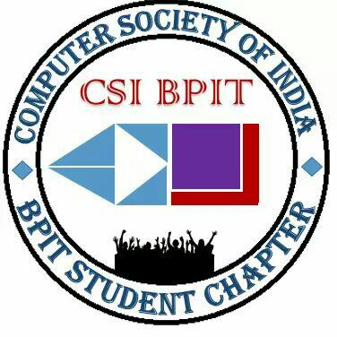
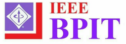
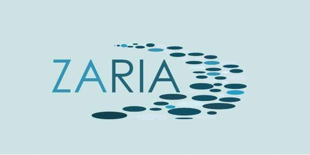
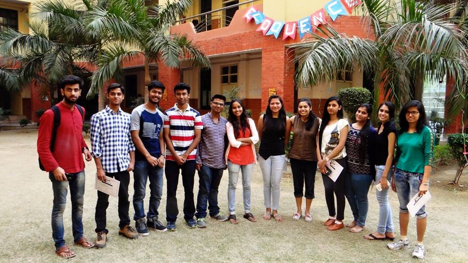
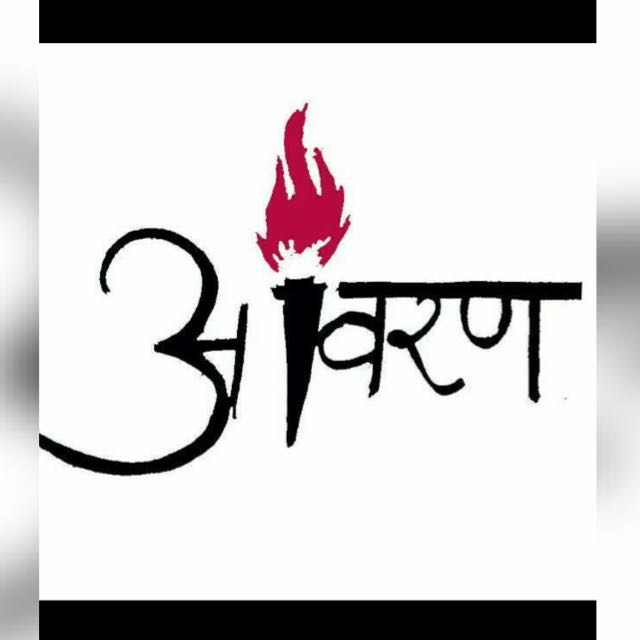
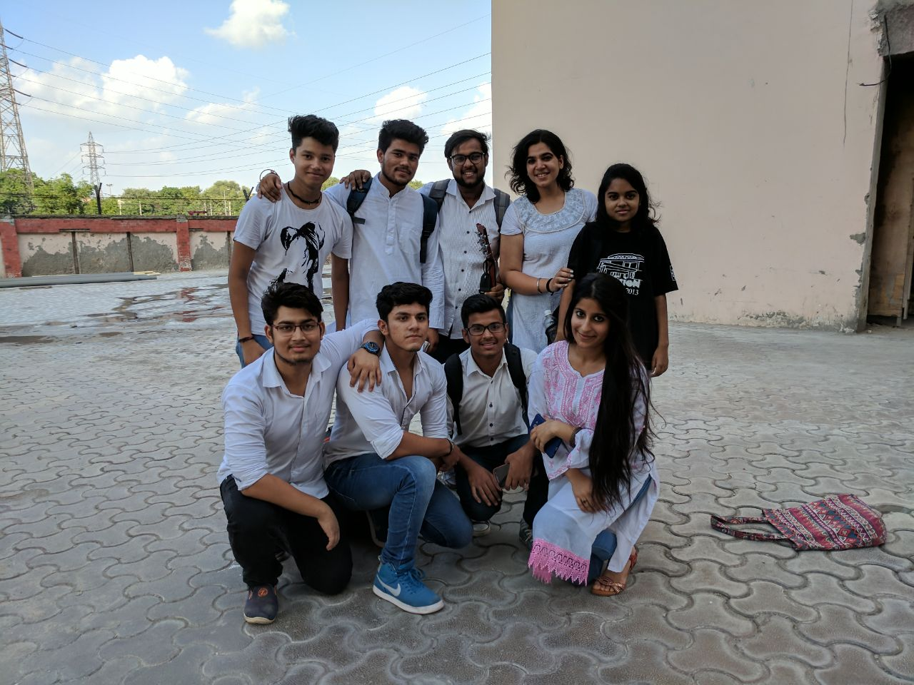
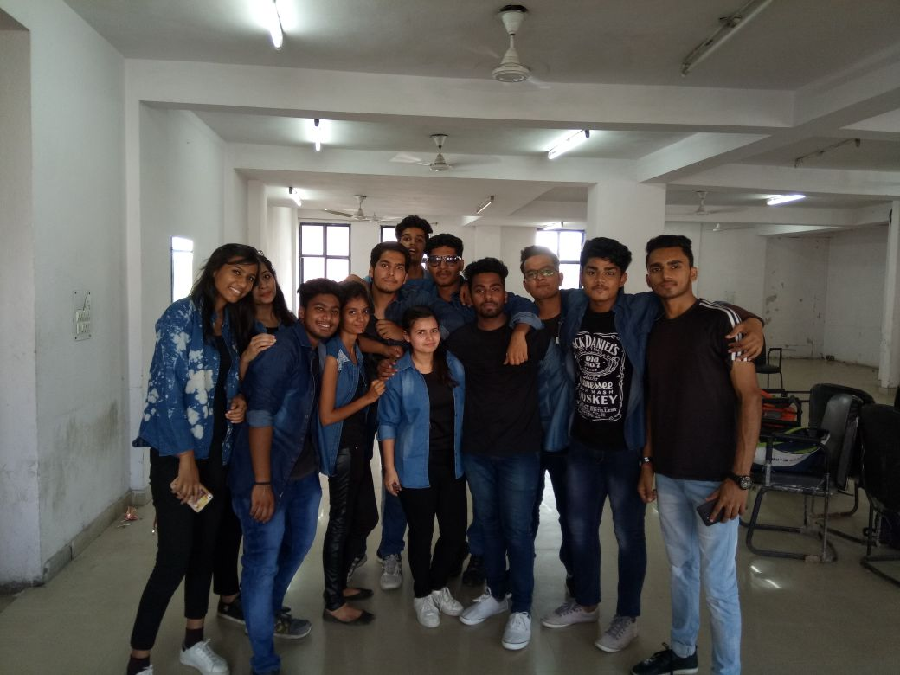
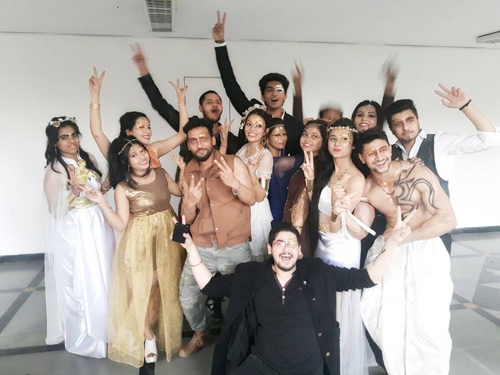

BPIT-CSI

The mission of the CSI is to facilitate research, knowledge sharing, learning and career enhancement for
all categories of IT professionals, while simultaneously inspiring and nurturing new entrants into the
industry and helping them to integrate into the IT community.
IEEE

IEEE-BPIT is a technical society which aims to spread technical awareness amongst students ,to help them
develop technical skills, to give a professional outlook , to encourage them to participate in various
technical competitions held in various universities, conducting workshops , seminars etc.
HACKIONS

There is nothing like the thrill of solving a real life problem that enhances the lives of others.The
intent of Hackions, the programming club of Bhagwan Parshuram Institute of Technology, is to give every
opportunity to experience that thrill.
INFUSIA
Infusia, the entrepreneurship cell of Bpit, aims to help entrepreneurial passions to convergeon a common
stage.
EFFERVESCENCE
The bilingual literary society of the institute provides a space that fosters various
forms of intellectual discussions as well as unique and stimulating social experiences.
ZARIA

The world just nedds a little help!
The name illustrates the very mission, extending
a guiding hand to help people walk their first step towards obtaining the social, emotional, financial
needs and skills required
CHROMAVITA

With the aim to let students explore their creative facets, the society helps them in acquiring new
qualities, enabling them to grow socially as well as mentally.Participation in art society ensures that
students step out of their academic shoes and step into artistic ones.
Avaran

Avaran, the dramatics society of the institute names itself from aveil of happiness, ignorance and
shadows that cover all truths of life, thus becoming the cloth that wears the fire to light the torch of
acknowledgement.
OCTAVE

Music is an art that connects our hearts!
Music is the most pious essence in the
world, capable of healing the sorest wound. It helps us relate ourselves to tha almighty, thereby giving
the human mind access to the realm of spirituality.
MAVERICS

Maverics is the dance society of the institute, initiated in 2012. Encompassing all
forms of dance, the society believes in engaging the dancer not only in technique based training but
also finer nuances like expressing and breathing from soul, and inspiring them through the medium of
dance.
PANACHE

With the ability to mould a perfect model out of any individual, the society puts its hard work and
determination to ignite the spark within and doesn't step back from experimenting anything new in
fashion.